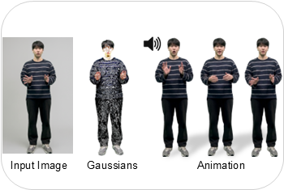
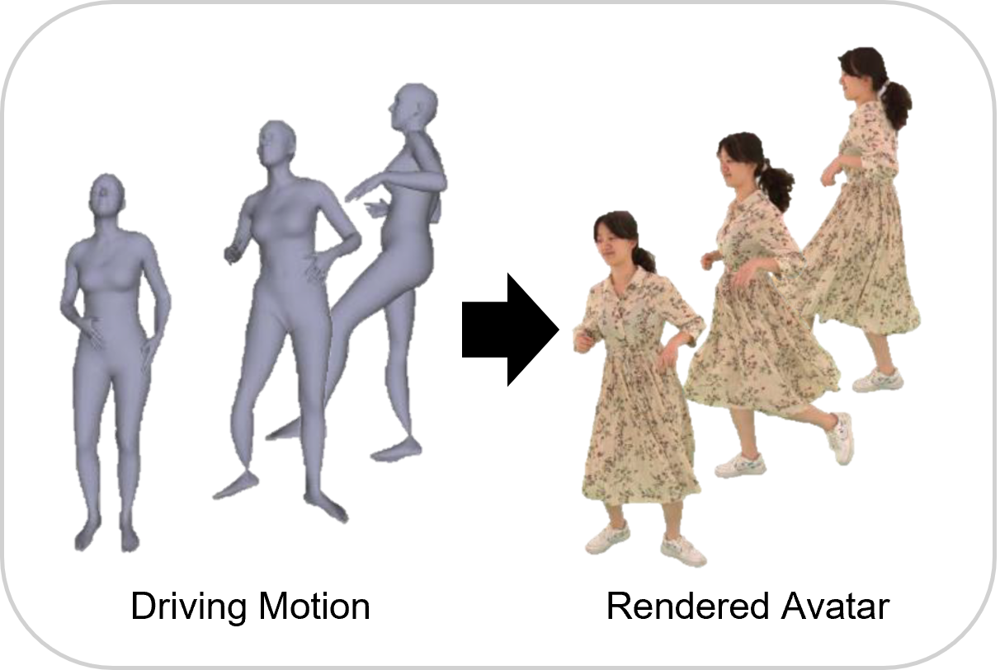
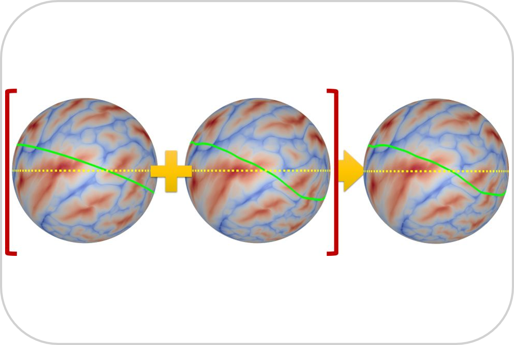
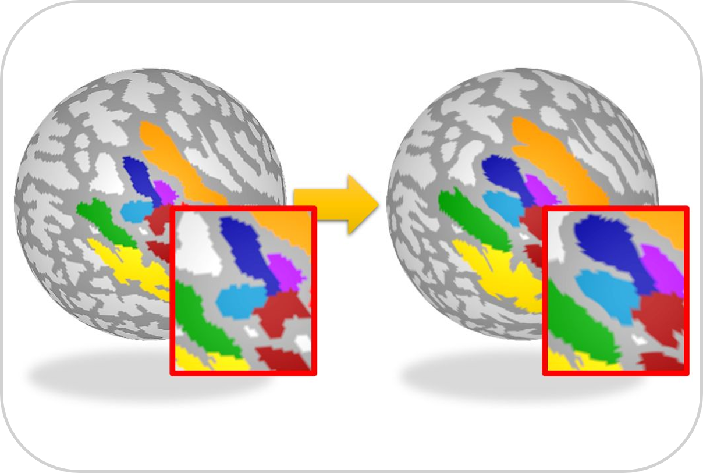

About Me
I am currently fulfilling my military service obligation as a professional research personnel in the Republic of Korea, where I collaborate closely with Gyeong-Moon Park. Previously, I completed my M.S. at Ulsan National Institute of Science and Technology (UNIST), where I was a member of the 3D Shape Analysis Lab (currently, MIP Lab in POSTECH), under the supervision of Ilwoo Lyu.
My long-term goal is to understand and model the human being through artificial intelligence and machine learning. My research topics range from 3D human modeling to 3D shape and medical image analysis such as cortical surface registration, sulcal labeling and geometric deep learning on spherical manifolds.
Seoul, Republic of Korea
seungeunlee00@gmail.com
Latest News
Feb 2026
Paper (AudioAvatar) accepted to CVPR 2026
Jan 2026
Paper (SMAGA) accepted to ICLR 2026
Jun 2025
Paper accepted to MICCAI 2025
Jun 2025
Paper (SPHARM-Reg) accepted to IEEE Transactions on Medical
Imaging
Sep 2024
Paper on sulcal labeling accepted to IEEE Transactions on Medical
Imaging
Jun 2024
Won 3rd Place in the RHOBIN Challenge at CVPR 2024
Publications
* For the papers listed below, I proactively led every stage of the work, including (i) problem definition, (ii) technical challenge analysis, (iii) methodology design, (iv) model development, (v) data processing, (vi) experiments, and (vii) writing.

Secondary Motion-aware 3D Clothed Gaussian Avatars for Monocular Videos
ICLR 2026



Ongoing Projects

Research Experience
2023 – Present
KLleon
AI Researcher, Future AI Team (Professional Research Personnel)
Collaborating with
Gyeong-Moon Park
2021 – 2023
UNIST
Graduate Research Assistant, 3D Shape Analysis Lab
Advised by
Prof. Ilwoo Lyu
(currently, MIP Lab @ POSTECH)
Awards
3rd Place, RHOBIN Challenge (3D Body Contact Estimation from Single
RGB Images)
CVPR 2024